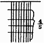
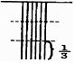
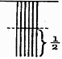
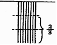
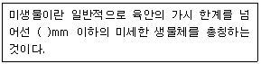
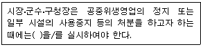

미용사(일반) (2010-10-03 기출문제)
1과목: 미용이론
1. 헤어커팅의 방법 중 테이퍼링(tapering)에는 3가지의 종류가 있다. 이 중에서 노멀테이퍼(normal taper)는?




(정답률: 77%)

2. 조선중엽 상류사회 여성들이 얼굴의 밑화장으로 사용한 기름은?
- 동백기름
- 콩기름
- 참기름
- 파마자기름
(정답률: 81%)
3. 퍼머넌트 웨이브 시술시 산화제의 역할이 아닌 것은?
- 퍼머넌트 웨이브의 작용을 계속 진행시 킨다.
- 1액의 작용을 멈추게 한다.
- 시스틴 결합을 재결합시킨다.
- 1액이 작용한 형태의 컬로 고정시킨다.
(정답률: 50%)
4. 헤어 컬러링 시 활용되는 색상환에 있어 적색의 보색은?
- 보라색
- 청색
- 녹색
- 황색
(정답률: 73%)
5. 다음 중 모발의 성장단계를 옳게 나타낸 것은?
- 성장기 → 휴지기 → 퇴화기
- 휴지기 → 발생기 → 퇴화기
- 퇴화기 → 성장기 → 발생기
- 성장기 → 퇴화기 → 휴지기
(정답률: 65%)
6. 스탠드업 컬에 있어 루프가 귓바퀴 반대 방향으로 말린 컬은?
- 플래트 컬
- 포워드 스탠드업 컬
- 리버스 스탠드업 컬
- 스컬프쳐 컬
(정답률: 69%)
7. 헤어 샴푸잉 중 드라이 샴푸 방법이 아닌 것은?
- 리퀴드 드라이 샴푸
- 핫 오일 샴푸
- 파우더 드라이 샴푸
- 에그 파우더 샴푸
(정답률: 79%)
8. 컬의 목적이 아닌 것은?
- 플러프(fluff)를 만들기 위해서
- 웨이브(wave)를 만들기 위해서
- 컬러의 표현을 원활하게 하기 위해서
- 볼륨을 만들기 위해서
(정답률: 82%)
9. 손톱의 상조피를 부드럽게 하기 위해 비눗물을 담는 용기는?
- 에머리보드
- 핑거볼
- 네일버퍼
- 네일파일
(정답률: 88%)
10. 매니큐어(Manicure) 바르는 순서가 옳은 것은?
- 네일에나멜 → 베이스코트 → 탑코트
- 베이스코트 → 네일에나멜 → 탑코트
- 탑코트 → 네일에나멜 → 베이스코트
- 네일표백제 → 네일에나멜 → 베이스코트
(정답률: 82%)
11. 삼한시대의 머리형에 관한 설명으로 틀린 것은?
- 포로나 노비는 머리를 깎아서 표시했다.
- 수장급은 모자를 썼다.
- 일반인은 상투를 틀게 했다.
- 귀천의 차이가 없이 자유롭게 했다
(정답률: 93%)
12. 두상의 특정한 부분에 볼륨을 주기 원할 때 사용되는 헤어 피스(hair piece)는?
- 위글렛(wiglet)
- 스위치(switch)
- 폴(fall)
- 위그(wig)
(정답률: 53%)
13. 커트 시술 시 두부(頭部)를 5등분으로 나누었을 때 관계없는 명칭은?
- 톱(top)
- 사이드(side)
- 헤드(head)
- 네이프(nape)
(정답률: 82%)
14. 다음 명칭 중 가위에 속하는 것은?
- 핸들
- 피봇
- 프롱
- 그루브
(정답률: 71%)
15. 퍼머약의 제1액 중 티오글리콜산의 적정 농도는?
- 1 ~ 2%
- 2 ~ 7%
- 8 ~ 12%
- 15 ~ 20%
(정답률: 67%)
16. 두피에 지방이 부족하여 건조한 경우에 하는 스캘프 트리트먼트는?
- 플레인 스캘프 트리트먼트
- 오일리 스캘프 트리트먼트
- 드라이 스캘프 트리트먼트
- 댄드러프 스캘프 트리트먼트
(정답률: 56%)
17. 헤어 블리치 시술상의 주의사항에 해당하지 않는 것은?
- 미용사의 손을 보호하기 위하여 장갑을 반드시 낀다.
- 시술 전 샴푸를 할 경우 브러싱을 하지 않는다.
- 두피에 질환이 있는 경우 시술하지 않는다.
- 사후손질로서 헤어 리컨디셔닝은 가급적 피하도록 한다.
(정답률: 66%)
18. 빗을 천천히 위쪽으로 이동시키면서 가위의 개폐를 재빨리 하여 빗에 끼어있는 두발을 잘라나가는 커팅 기법은?
- 싱글링(shingling)
- 틴닝 시저스(thinning scissors)
- 레이저 커트(razor cut)
- 슬리더링(slithering)
(정답률: 63%)
19. 콜드웨이브(cold wave)시술 후 머리끝이 자지러지는 원인에 해당 되지 않는 것은?
- 모질에 비하여 약이 강하거나 프로세싱 타임이 길었다.
- 너무 가는 로드 (rod)를 사용했다.
- 텐션(tension:긴장도)이 약하여 로드에 꼭 감기지 않았다.
- 사전 커트시 머리끝을 테이퍼(taper)하지 않았다.
(정답률: 57%)
20. 고대 중국 미용의 설명으로 틀린 것은?
- 하(夏)나라 시대에 분을, 은(殷)나라의 주 왕 때에는 연지 화장이 사용되었다.
- 아방궁 3천명의 미희들에게 백분과 연지를 바르게 하고 눈썹을 그리게 했다.
- 액황이라고 하여 이마에 발라 약간의 입체감을 주었으며 홍장이라고 하여 백분을 바른 후 다시 연지를 덧발랐다.
- 두발을 짧게 깎거나 밀어내고 그 위에 일광을 막을 수 있는 대용물로써 가발을 즐겨 썼다.
(정답률: 75%)
2과목: 공중보건학
21. 합병증으로 고환염, 뇌수막염 등이 초래되어 불임이 될 수도 있는 질환은?
- 홍역
- 뇌염
- 풍진
- 유행성 이하선염
(정답률: 42%)
22. 이상 저온 작업으로 인한 건강 장애인 것은?
- 참호족
- 열경련
- 울열증
- 열쇠약증
(정답률: 70%)
23. 단위 체적 안에 포함된 수분의 절대량을 중량이나 압력으로 표시한 것으로 현재 공기 1m3중에 함유된 수증기량 또는 수증기 장력을 나타낸 것은?
- 절대습도
- 포화습도
- 비교습도
- 포차
(정답률: 65%)
24. 보균자(Carrier)는 전염병 관리상 어려운 대상이다. 그 이유와 관계가 가장 먼 것은?
- 색출이 어려우므로
- 활동영역이 넓기 때문에
- 격리가 어려우므로
- 치료가 되지 않으므로
(정답률: 62%)
25. 다음 중 기생충과 전파 매개체의 연결이 옳은 것은?
- 무구조층-돼지고기
- 간디스토마-바다회
- 폐디스토마-가재
- 광절열두조충-쇠고기
(정답률: 62%)
26. 다음 중 공중보건사업의 대상으로 가장 적절한 것은?
- 성인병 환자
- 입원 환자
- 암투병 환자
- 지역사회 주민
(정답률: 86%)
27. 대기오염을 일으키는 원인으로 거리가 가장 먼 것은?
- 도시의 인구감소
- 교통량의 증가
- 기계문명의 발달
- 중화학공업의 난립
(정답률: 87%)
28. 한 나라의 보건수준을 측정하는 지표로서 가장 적절한 것은?
- 의과대학 설치수
- 국민소득
- 전염병 발생율
- 영아사망율
(정답률: 88%)
29. 수인성(水因性) 전염병이 아닌 것은?
- 일본뇌염
- 이질
- 콜레라
- 장티푸스
(정답률: 57%)
30. 법정전염병 중 제3군 전염병에 속하지 않는 것은?(관련 규정 개정전 문제로 여기서는 기존 정답인 1번을 누르면 정답 처리됩니다. 자세한 내용은 해설을 참고하세요.)
- B형 간염
- 공수병
- 렙토스피라증
- 쯔쯔가무시증
(정답률: 69%)
3과목: 소독학
31. 비교적 약한 살균력을 작용시켜 병원 미생물의 생활력을 파괴하여 감염의 위험성을 없애는 조작은?
- 소독
- 고압증기멸균
- 방부처리
- 냉각처리
(정답률: 77%)
32. 금속성 식기, 면 종류의 의류, 도자기의 소독에 적합한 소독방법은?
- 화염 멸균법
- 건열 멸균법
- 소각 소독법
- 자비 소독법
(정답률: 59%)
33. 소독약품으로서 갖추어야 할 구비조건이 아닌 것은?
- 안전성이 높을 것
- 독성이 낮을 것
- 부식성이 강할 것
- 융해성이 높을 것
(정답률: 80%)
34. 균체의 단백질 응고작용과 관계가 가장 적은 소독약은?
- 석탄산
- 크레졸액
- 알콜
- 과산화수소수
(정답률: 41%)
35. 석탄산계수(페놀계수)가 5일 때 의미하는 살균력은?
- 페놀보다 5배 높다.
- 페놀보다 5배 낮다.
- 페놀보다 50배 높다.
- 페놀보다 50배 낮다.
(정답률: 67%)
36. 소독약을 사용하여 균 자체에 화학반응을 일으켜 세균의 생활력을 빼앗아 살균하는 것은?
- 물리적 멸균법
- 건열 멸균법
- 여과 멸균법
- 화학적 살균법
(정답률: 76%)
37. 세균들은 외부환경에 대하여 저항하기 위해서 아포를 형성하는데 다음 중 아포를 형성하지 않는 세균은?
- 탄저균
- 젖산균
- 파상풍균
- 보툴리누스균
(정답률: 44%)
38. ( )안에 알맞은 것은?

- 0.01
- 0.1
- 1
- 10
(정답률: 60%)
39. 미생물의 성장과 사멸에 주로 영향을 미치는 요소로 가장거리가 먼 것은?
- 영양
- 빛
- 온도
- 호르몬
(정답률: 77%)
40. 다음 중 이·미용실에서 사용하는 수건을 철저하게 소독하지 않았을 때 주로 발생할 수 있는 전염병은?
- 장티푸스
- 트라코마
- 페스트
- 일본뇌염
(정답률: 64%)
4과목: 피부학
41. 비늘모양의 죽은 피부세포가 엷은 회백색 조각으로 되어 떨어져 나가는 피부층은?
- 투명층
- 유극층
- 기저층
- 각질층
(정답률: 82%)
42. 파장이 가장 길고 인공 선탠 시 활용하는 광선은?
- UV - A
- UV - B
- UV - C
- r 선
(정답률: 74%)
43. 피부 표피층 중에서 가장 두꺼운 층으로 세포표면에는 가시 모양의 돌기를 가지고 있는 것은?
- 유극층
- 과립층
- 각질층
- 기저층
(정답률: 41%)
44. 피부에는 한선(땀샘) 중 대한선은 어느 부위에서 볼 수 있는가?
- 얼굴과 손발
- 배와 등
- 겨드랑이와 유두 주변
- 팔과 다리
(정답률: 76%)
45. 혈색을 좋게 하는 철분이 많이 들어있는 식품과 거리가 가장 먼 것은?
- 감자
- 시금치
- 조개류
- 소나 닭의 간
(정답률: 72%)
46. 피부발진 중 일시적인 증상으로 가려움증을 동반하여 불규칙적인 모양을 한 피부현상은?
- 농포
- 팽진
- 구진
- 결절
(정답률: 50%)
47. 피부 색소침착에서 과색소 침착 증상이 아닌 것은?
- 기미
- 백반증
- 주근깨
- 검버섯
(정답률: 79%)
48. 화상의 구분 중 홍반, 부종, 통증뿐만 아니라 수포를 형성하는 것은?
- 제1도 화상
- 제2도 화상
- 제3도 화상
- 중급 화상
(정답률: 79%)
49. 천연보습인자 성분 중 가장 많이 차지하는 것은?
- 아미노산
- 피롤리돈 카르복시산
- 젖산염
- 포름산염
(정답률: 78%)
50. 다음 중 바이러스성 피부 질환은?
- 기미
- 주근깨
- 여드름
- 단순포진
(정답률: 79%)
5과목: 공중위생법규
51. 면허증을 다른 사람에게 대여하여 면허가 취소되거나 정지명령을 받은 자는 지체 없이 누구에게 면허증을 반납해야 하는가?
- 시·도지사
- 시장·군수·구청장
- 보건복지부장관
- 경찰서장
(정답률: 85%)
52. 이·미용업의 영업자는 연간 몇 시간의 위생교육을 받아야 하는가?
- 3시간
- 8시간
- 10시간
- 12시간
(정답률: 77%)
53. 영업소의 폐쇄명령을 받고도 영업을 하였을 시에 대한 벌칙기준은?
- 2년 이하의 징역 또는 3천만 원 이하의 벌금
- 1년 이하의 징역 또는 1천만 원 이하의 벌금
- 200만 원 이하의 벌금
- 100만 원 이하의 벌금.
(정답률: 71%)
54. ( ) 안에 알맞은 것은?

- 위생서비스 수준의 평가
- 공중위생감사
- 청문
- 열람
(정답률: 80%)
55. 과태료의 부과·징수 절차로서 틀린 것은?
- 시장·군수·구청장이 부과·징수한다.
- 과태료 처분의 고지를 받은 날부터 30일 이내에 이의를 제기할 수 있다.
- 과태료 처분을 받은 k가 이의를 제기한 경우 처분권자는 보건복지부 장관에게 이를 통보한다.
- 기간 내 이의제기 없이 과태료를 납부하지 아니한 때에는 지방세 체납, 처분의 예에 따른다.
(정답률: 69%)
56. 이·미용사의 면허증을 다른 사람에게 대여한 때의 1차 위반 행정처분 기준은?
- 영업정지 2월
- 면허정지 2월
- 영업정지 3월
- 면허정지 3월
(정답률: 52%)
57. 공중위생감시원의 자격에 해당되지 않는 자는?
- 위생사 자격증이 있는 자
- 대학에서 미용학을 전공하고 졸업한 자
- 외국에서 환경기사의 면허를 받은 자
- 3년 이상 공중위생 행정에 종사한 경력 이 있는 자
(정답률: 56%)
58. 건전한 영업질서를 위하여 공중위생영업자가 준수하여야 할 사항을 준수하지 아니한 자에 대한 벌칙 기준은?
- 1년 이하의 징역 또는 1천만 원 이하의 벌금
- 6월 이하의 징역 또는 500만 원 이하의 벌금
- 3월 이하의 징역 또는 300만 원 이하의 벌금
- 300만 원의 과태료
(정답률: 42%)
59. 이·미용 업소 내에 게시하지 않아도 되는 것은?
- 이·미용업 신고증
- 개설자의 면허증 원본
- 근무자의 면허증 원본
- 이·미용요금표
(정답률: 78%)
60. 공중위생영업에 속하지 않는 것은?
- 식당조리업
- 숙박업
- 이·미용업
- 세탁업
(정답률: 61%)